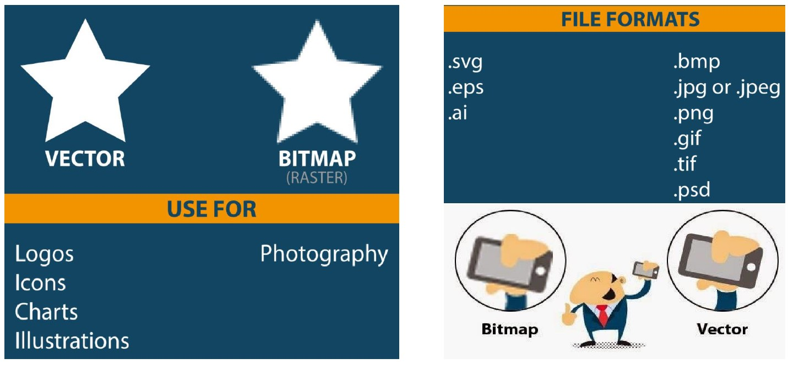

En informática, podemos distinguir entre dos tipos de imágenes existentes.
imágenes de mapa de bits: están formadas por puntos de colores.
imágenes vectoriales: están formadas por formas geométricas
Ventajas y Desventajas de Imágenes vectoriales
Ventaja: ocupan poco espacio y se pueden ampliar a cualquier escala sin
que se pierda calidad de la imágen.
Desventaja: no permiten representar imágenes sin formas definidas
como sí ocurre con los fotografías.
Ventajas y Desventajas de Imágenes de Mapa de Bits
Ventaja: permiten representar imágenes sin formas definidas.
Desventaja: Pierden mucha calidad al ampliarlas, y además, ocupan
mucho espacio en el disco duro.

Insercción de Imágenes en HTML
Para insertar una imagen en html, vamos a utilizar la monoetiqueta img,
además de utilizar esta monoetiqueta, utilizaremos el atributo asociado que es
source. Este viene representado como src A la hora de utilizar las imágenes, podemos asociarlos a una serie de atributos
que nos permitan facilitarles una serie de características.
Estos atributos son los siguientes:
src: indicar la dirección o ruta en la que se va a alojar la imagen que queremos insertar.
alt: viene dado de alternativo, y se utiliza para indicar un breve texto informativo
sobre la imagen que vamos a insertar.
height y width: se utilizan para dar altura y anchura a la foto.
usepmap: sirve para asociar a la imagen un mapa de imágenes (un mapeado)
title: contiene texto que se muestra en forma de tip para dar información
sobre la imagen. Para ello, tenemos que posicionar el cursor encima de la foto.
Etiqueta picture
Se utiliza para dar una mayor flexibilidad a la hora de utilizar imágenes cuando
aplicamos conceptos de responsive web.
Etiqueta Figure
Se utiliza en HTML5 para mostrar un título asociado a una imagen.
Su estructura es la siguiente:
figure: es la etiqueta padre.
img: es la etiqueta de la imagen
figcaption: etiqueta para el título de la foto
Logotipo de HTML5 y CSS3
Insertar Audio y Vídeo en HTML5
En HTML5, podemos insertar vídeos y audios de varias maneras.
Mediante una etiqueta que se llama iframe, podemos insertar vídeos de
un servidor web. Ejemplo: Youtube.
Inconveniente: Que si el servidor externo se cae o falla, el vídeo falla...(NO esta operativo)
Mediante la etiqueta video. Mediante esta etiqueta, podemos insertar
vídeos que tenemos alojados en nuestros propios equipos o servidores.
Mediante la etiqueta audio. Con esta etiqueta podemos insertar audios
que tenemos alojados en nuestros propios equipos o servidores.
Insercción video de Youtube con iframe
Insertar un vídeo desde mi propio servidor o PC
Atributos asociados a los audios y videos en HTML5
src:definir la URL o Dirección de nuestros archivos de audio y video
preloades usado en audio y vídeo para almacenar archivos de gran tamaño temporalmente
(buffering). Van asociados a:
none: no almacena nada
auto: almacena temporalmente archivos multimedia
metadata: almacena temporalmente sólo los metadatos de los archivos
mediagroup: para realizar agrupaciones multimedia
autoplay: reproducir al inicio de la web
loop: reproduce en formato bucle el audio o vídeo
muted: silenciar el audio
controls: controles del reproductor multimedia
Específicos a parte de los otros, para videos:
width y height
poster: poner una imagen de comienzo al vídeo hasta que lo vamos a reproducir.